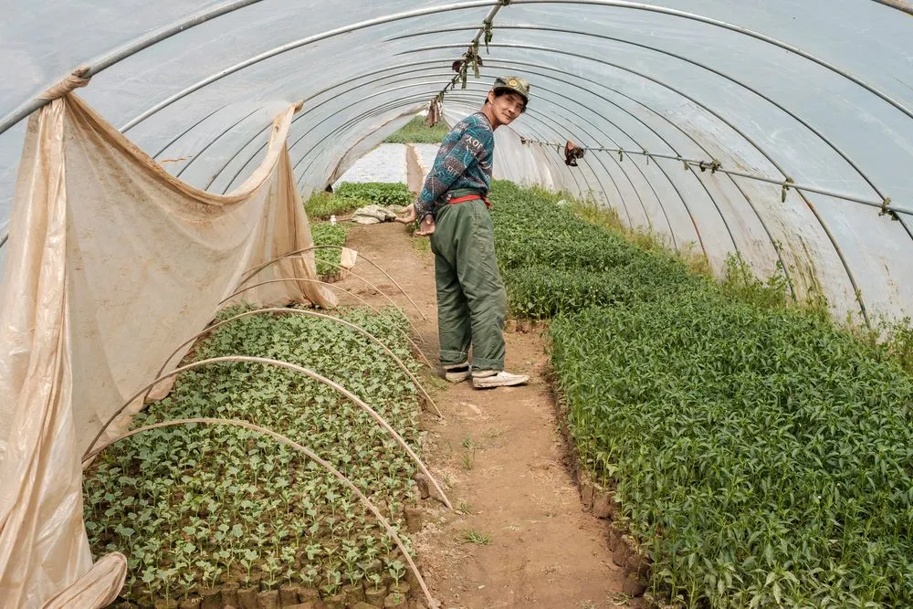

Little Sprouts
A garden club for ages 4 to 11
180 children in the garden club
Saturday mornings. Ages 4 to 11.

Two acres in Chorlton, Manchester, where neighbours grow, cook and learn together. Here is what the farm is doing this month.
October
Apple-pressing days and pumpkin soup, and the beds get put to rest. Come and clear one.
A garden club for ages 4 to 11
180 children in the garden club
Saturday mornings. Ages 4 to 11.
Community growing for everyone
340 neighbours growing food each week
Tuesdays and Saturdays. All ages.

Cooking skills with food you grew
1200 meals cooked and shared this year
Thursday evenings. Over 16s.

An 8-week course in growing and horticulture
46 trainees now working in horticulture
Mon to Thu, 8 weeks. Over 18s.

“I came for something to do on Saturdays. I stayed because people noticed when I wasn’t there.”
Most of our money comes from people like you. A gift of £12 plants twenty seedlings, and a monthly gift lets us plan for the whole year.